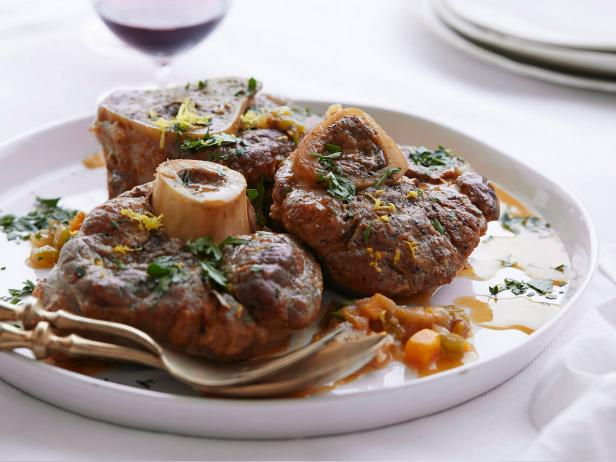

Osso Bucco

- Place the rosemary, thyme, bay leaf and cloves into cheesecloth and secure with twine. This will be your bouquet garni.
- For the veal shanks, pat dry with paper towels to remove any excess moisture. Veal shanks will brown better when they are dry. Secure the meat to the bone with the kitchen twine. Season each shank with salt and freshly ground pepper. Dredge the shanks in flour, shaking off excess.
- In a large Dutch oven pot, heat vegetable oil until smoking. Add tied veal shanks to the hot pan and brown all sides, about 3 minutes per side. Remove browned shanks and reserve.
- In the same pot, add the onion, carrot and celery. Season with salt at this point to help draw out the moisture from the vegetables. Saute until soft and translucent, about 8 minutes. Add the tomato paste and mix well. Return browned shanks to the pan and add the white wine and reduce liquid by half, about 5 minutes. Add the bouquet garni and 2 cups of the chicken stock and bring to a boil. Reduce heat to low, cover pan and simmer for about 1 1/2 hours or until the meat is falling off the bone. Check every 15 minutes, turning shanks and adding more chicken stock as necessary. The level of cooking liquid should always be about 3/4 the way up the shank.
- Carefully remove the cooked shanks from the pot and place in decorative serving platter. Cut off the kitchen twine and discard.
- Remove and discard bouquet garni from the pot.
- Pour all the juices and sauce from the pot over the shanks. Garnish with chopped parsley and lemon zest.
Go back